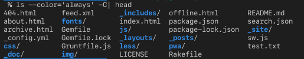
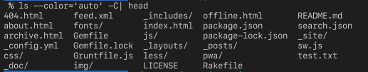

ls コマンドとversion listing
Definition 1 ls -v コマンド
ls -vオプションは，ファイル名を自然なバージョン順（natural version sort）でソートするコマンド-vはバージョンでsortするオプション- 他にも
-t: 時間順などがある
通常の辞書順ソートでは，文字列として比較されるため，file10はfile2よりも前に来てしまいます． -v オプションを使用すると，ファイル名に含まれる数字を数値として認識し，人間が期待する順序（file2 → file10）でソートされます． バックアップファイルやバージョン管理されたファイルの一覧を取得する際に特に便利です．
Example 1 バックアップファイルの最新版を取得
ls -v を使って，バックアップファイルを自然なバージョン順でソートします．
まず，mv -V --backup=numbered に相当する形でファイルを以下のように作成します．
$ for i in model.pkl.~1~ model.pkl.~2~ model.pkl.~10~
touch $i
end
$ ls -v model.pkl.~*~ -1
model.pkl.~1~
model.pkl.~2~
model.pkl.~10~surfix ~10~ が最新となりますが， tail -1 と組み合わせることで，この最新のバックアップファイルを簡単に取得できます。
$ ls -v model.pkl.~*~ | tail -1
model.pkl.~10~-v オプションなしで実行すると
$ ls model.pkl.~*~ | tail -1
model.pkl.~2~lsコマンドのカラー引数の挙動差
Definition 2 ls --color
- default挙動は
--color=never --colorを指定するとデフォルトの挙動は--color=always--color=autoは標準出力先がTerminalの場合，カラー出力をしてくれるがそれ以外はしてくれない--color=alwaysは標準出力先がTerminal以外の場合でも，カラー出力をしてくれる
マニュアルを確認すると以下
$ man ls
DESCRIPTION
--color[=WHEN]
colorize the output; WHEN can be 'always' (default if omitted), 'auto', or
'never'; more info below
...
(略)
...
Using color to distinguish file types is disabled both by default and with --color=never.
With --color=auto, ls emits color codes only when standard output is connected to a ter‐
minal. The LS_COLORS environment variable can change the settings. Use the dircolors
command to set it.Example 2 パイプで結果を渡す場合


Example 3 リダイレクトを用いて，出力結果をテキストへWRITE
ls --color=alwaysの場合は，テキストへ出力された結果に文字列だけでなく，カラーコードも合わせて出力されていますls --color=autoの場合は，文字列のみ
$ ls --color=always -C > test.txt && nano test.txt
404.html feed.xml ^[[0m^[[01;34m_includes^[[0m/ offline.html README.md
about.html ^[[01;34mfonts^[[0m/ index.html package.json search.json
archive.html Gemfile ^[[01;34mjs^[[0m/ package-lock.json ^[[01;34m_site^[[0m/
_config.yml Gemfile.lock ^[[01;34m_layouts^[[0m/ ^[[01;34m_posts^[[0m/ sw.js
^[[01;34mcss^[[0m/ Gruntfile.js ^[[01;34mless^[[0m/ ^[[01;34mpwa^[[0m/ test.txt
^[[01;34m_doc^[[0m/ ^[[01;34mimg^[[0m/ LICENSE Rakefile
$ ls --color=auto -C > test.txt && nano test.txt
404.html feed.xml _includes/ offline.html README.md
about.html fonts/ index.html package.json search.json
archive.html Gemfile js/ package-lock.json _site/
_config.yml Gemfile.lock _layouts/ _posts/ sw.js
css/ Gruntfile.js less/ pwa/ test.txt
_doc/ img/ LICENSE RakefileAppendix: zshでフックを用いる
## ファイル数が多い時には省略表示
ls_abbrev() {
local cmd_ls='ls' # コマンドを格納するlocal変数を定義
local -a opt_ls # optionを格納するlocal変数の箱をarray型で定義
opt_ls=('-CF' '--color=always') # option local変数を代入
local ls_result
## CLICOLOR_FORCE=1でcolor出力を渡す
ls_result=$(CLICOLOR_FORCE=1 COLUMNS=$COLUMNS command $cmd_ls ${opt_ls[@]} | sed $'/^\e\[[0-9;]*m$/d')
local ls_lines=$(echo "$ls_result" | wc -l | tr -d ' ') #出力結果の行数をカウント
if [ $ls_lines -gt 10 ]; then #出力行数が11以上か未満で省略を切り分ける
echo "$ls_result" | head -n 5
echo '...'
echo "$ls_result" | tail -n 5
echo "$(command ls -1 -A | wc -l | tr -d ' ') files exist"
else
echo "$ls_result"
fi
}
autoload -Uz add-zsh-hook # hook関数の呼び出しをOKにする
add-zsh-hook chpwd ls_abbrev # chpwd(カレントディレクトリが変更したとき)をトリガーに ls_abbrevを実行する